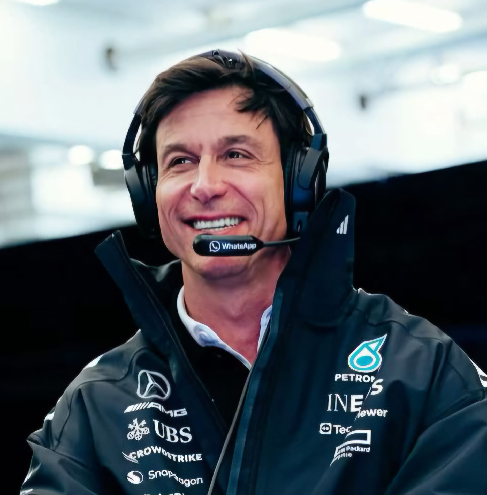

Toto Wolff
Toto Wolff
Team: Mercedes
Nationality: Austrian
Born: 1972
In charge since: 2013
History: Toto Wolff, born in Vienna, Austria, on January 12, 1972, is one of the most influential figures in modern Formula 1. After a career in motorsport as a racing driver and entrepreneur, he became involved in team management and investment, joining Williams as an executive director in 2012 before moving to Mercedes in 2013. Wolff was appointed Team Principal and CEO of the Mercedes-AMG Petronas Formula One Team in 2013. Under his leadership, Mercedes established one of the most dominant eras in Formula 1 history, securing multiple Constructors’ and Drivers’ Championships with drivers including Lewis Hamilton and Nico Rosberg. Renowned for his strategic leadership, business acumen, and focus on team culture, Wolff has played a key role in maintaining Mercedes’ competitiveness while guiding the team through major regulatory and technical changes in the sport.
